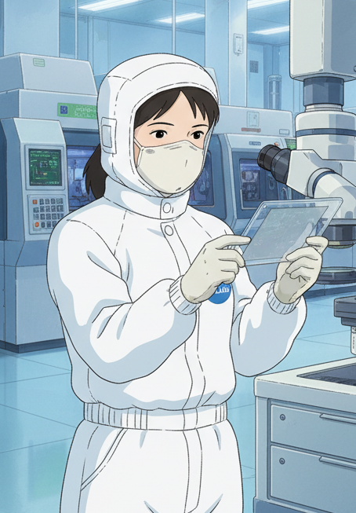
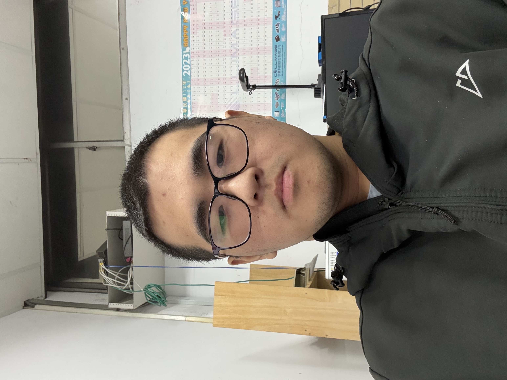
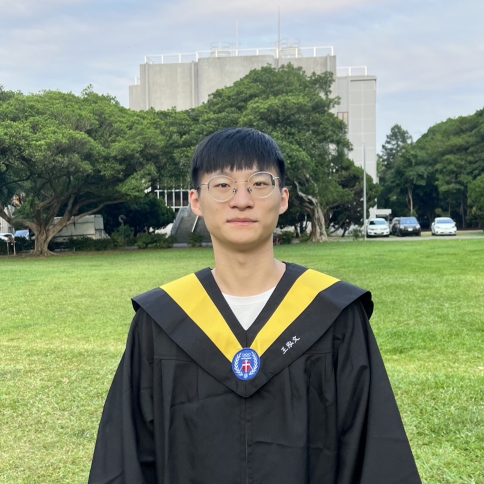

研究團隊
實驗室圍繞 III-V / III-N 化合物半導體， 目前分為 元件製程、MOCVD、 MBE 三大技術軸線，並累積自 81 年起跨越 HBT / HEMT / LED / Laser / 功率元件的完整畢業生系譜。
本頁面提供實驗室現有團隊編制與歷屆畢業生名單。製程組負責 光罩設計，元件結構設計，元件製程跟量測分析；MOCVD 與 MBE 組則專注於 III-N / III-V 之磊晶成長，磊晶結構設計與材料特性。
元件製程量測與結構設計
主要進行元件製程跟量測分析，光罩設計，使用 Sentaurus 進行元件結構模擬。
| 照片 | 姓名 | 級別 | |
|---|---|---|---|

|
陳昇凱
製程
|
博士 | @gmail.com |
|
|
陳思宏
製程
|
碩士生 | etileo47@gmail.com |

|
陳鈺澄
製程
|
碩士生 | 112226076@cc.ncu.edu.tw |
|
|
王俊哲
製程
|
碩士生 | mtw001c1@gmail.com |
|
|
游蕙碧
製程
|
碩士生 | 113226051@cc.ncu.edu.tw |
|
|
林育輝
製程
|
碩士生 | iamwhitefatfat00@gmail.com |
|

|
陳雅雯
製程
|
碩士生 | cywen717@gmail.com |
|
|
陳秉佑
製程
|
碩士生 | chenbill718@gmail.com |
代表案例
傳統 Schottky gate GaN HEMT，p-GaN gate HEMT，Tri-gate GaN，MIS GaN HEMT
MOCVD 磊晶結構設計與磊晶製程團隊
主要進行 GaN / InGaN / AlGaN 於 Si / Sapphire / SiC / QST / BN 之磊晶結構設計，材料生長與材料分析，使用 Silvaco 進行磊晶結構模擬。
| 照片 | 姓名 | 級別 | |
|---|---|---|---|

|
邱楷傑
MOCVD
|
碩士生 | ken.chou0309@gmail.com |

|
郭傑翔
MOCVD
|
碩士生 | a0975644285@gmail.com |
|
|
張肇沅
MOCVD
|
碩士生 | tw.chaoyuanchang@gmail.com |

|
徐紹翔
MOCVD
|
碩士生 | alan890221@gmail.com |
|
|
田硯煌
MOCVD
|
碩士生 | fddrfe5212@gmail.com |

|
林宏洋
MOCVD
|
碩士生 | sony91213@gmail.com |
|
|
方賢任
MOCVD
|
碩士生 | samfang28@gmail.com |

|
李尚穎
MOCVD
|
碩士生 | lishane1206@gmail.com |
|

|
林庭毓
MOCVD
|
碩士生 | tinu0825@gmail.com |
代表案例
GaN-on-Si / GaN-on-Sapphire 高壓 HEMT 結構之磊晶設計
MBE 成長團隊
聚焦 InP / InAs / GaSb / 量子點 / 超晶格等結構與 HBT、IR 偵測器等元件。
| 照片 | 姓名 | 級別 | |
|---|---|---|---|
|

|
王泓文
MBE
|
碩士生 | tom20030725@gmail.com |
代表案例
高操作溫度致冷型紅外線影像感測技術
歷屆畢業學生（按年度折疊）
畢業學生依年度由近到遠排列，點選各年度可展開 / 收合詳細論文題目。 名單涵蓋 HBT / HEMT / LED / Laser / 功率元件與材料研究等主題。
● 113 年 博士 1 · 碩士 3
▶
- 博士 穆沙法 氮化硼介導 III 族氮化物和 B(Al,Ga)N 異質結構的磊晶成長
- 碩士 呂彥鋒 高功率氮化鎵高電子遷移率電晶體崩潰特性優化研究
- 碩士 鄭祥佑 砷化銦量子點及應力緩衝層中加入銻之光學特性研究
- 碩士 李明原 4H-SiC 基板上具不同緩衝層之 AlGaN HEMT 的直流與高頻特性研究
● 112 年 碩士 2
▶
- 碩士 謝德 應用於毫米波的 Γ 型閘極氮化鎵高電子遷移率電晶體結構之製作與特性分析
- 碩士 洪子鈞 以高介電常數鈍化層提高氮化鎵高電子遷移率電晶體崩潰電壓之研究
● 111 年 碩士 1
▶
- 碩士 凌瑋宏 1200 伏矽基氮化鎵高電子遷移率電晶體緩衝層之研究
● 110 年 碩士 1
▶
- 碩士 陳暉宇 次微米 T 型閘極氮化鎵毫米波功率電晶體之製程與特性分析
● 109 年 博士 1 · 碩士 5
▶
- 博士 辛耶兒 Epitaxy and characterization of III-nitride high electron mobility transistors on silicon for RF applications
- 碩士 郗靖加 P-型 GaN 閘極高電子遷移率電晶體之磊晶層設計與成長
- 碩士 張懷言 金屬-絕緣層-p 型氮化鎵增強型高電子遷移率電晶體之研究
- 碩士 柯尊傑 分子束磊晶成長 InAs/GaSb 第二型超晶格以應用於中紅外光偵測器
- 碩士 鄭儒宇 磊晶成長氮化鎵高電子遷移率電晶體結構於矽基板過程晶圓翹曲之研析
- 碩士 陳暉宇 次微米 T 型閘極氮化鎵毫米波功率電晶體之製程與特性分析
● 108 年 碩士 7
▶
- 碩士 廖偉筑 矽基鍺模板上 N 通道砷化銦鎵及 P 通道鍺鰭式場效電晶體之研
- 碩士 胡庭玉 超晶格緩衝層對成長於矽基板氮化鎵高電子遷移率電晶體動態特性之影響
- 碩士 萬禹辰 氮化鋁銦鎵/氮化鎵毫米波功率電晶體之製作與特性分析
- 碩士 朱英皓 以漸變式氮化鋁鎵超晶格結構提升成長於矽基板上氮化鎵磊晶層之品質
- 碩士 呂翎華 異質整合共閘極 N 型砷化銦鎵與 P 型鍺鰭式場效電晶體於矽基板之研究
- 碩士 蔡禮仰 以 ASM-HEMT Model 建立氮化鋁鎵/氮化鎵高電子遷移率電晶體之模型
- 碩士 李健民 毫米波氮化鎵高電子遷移率電晶體之研製
● 107 年 碩士 7
▶
- 碩士 陳泰霖 選擇性磊晶成長砷化銦鎵與砷化銦鋁於奈米圖案化鍺模板
- 碩士 許善軍 於圖案化鍺模板上選擇性成長之砷化銦鎵鰭式場效電晶體研製
- 碩士 林恩碩 T 型閘極氮化鋁銦(鎵)/氮化鋁/氮化鎵高電子遷移率電晶體製作與特性分析
- 碩士 游荃岳 磊晶成長三族氮化物於六英吋矽基板與其材料特性分析
- 碩士 吳修銘 高功率 P 型氮化鎵閘極氮化鎵異質場效電晶體動態特性之研究
- 碩士 陳昱志 矽基氮化鎵高電子遷移率電晶體 通道層與緩衝層之成長與材料特性分析
- 碩士 劉宜臻 以 I-Line 光學微影法製作次微米氮化鎵高電子遷移率電晶體之研究
● 106 年 博士 1 · 碩士 2
▶
- 博士 薛惟仁 砷化銦與銻化鎵金氧半電容之界面特性研究
- 碩士 陳妗仰 砷化銦鎵/銻砷化鎵第二型異質接面 P 通道穿隧場效電晶體之設計與模擬
- 碩士 鄒承翰 開發具鈦/鋁矽銅歐姆接觸之砷化銦鎵金氧半場效電晶體
● 105 年 碩士 5
▶
- 碩士蘇冠華經電漿處理之氧化鉿/氧化鋁/銻化鎵金氧半電容界面缺陷研究
- 碩士潘幸璟以氫氧化鉀蝕刻製程製作掘入式增強型氮化鋁銦/氮化鎵異質結構場效電晶體
- 碩士張淳威高功率氮化鎵異質場效電晶體動態特性之研究
- 碩士李彥漳以氮氣作為載氣改善有機金屬化學蒸氣沉積之氮化鋁銦/氮化鋁/氮化鎵異質結構傳輸特性
- 碩士許乃蓉鍺與砷化銦鎵鰭式場效電晶體共閘極製程之開發
● 104 年 博士 1 · 碩士 7
▶
- 博士李庚諺氮化鋁鎵/氮化鎵蕭基二極體與氮化鋁銦/氮化鎵場效電晶體之磊晶成長、元件製作與特性探討
- 碩士王柏翔新型陽極蝕刻與氟離子處理於矽基板上之氮化鋁鎵/氮化鎵蕭基二極體
- 碩士高維新氮化鎵場效電晶體之動態特性與表面處理研究
- 碩士陳季賢磊晶成長氮化鋁銦/氮化鋁/氮化鎵異質結構於六吋矽基板與其特性探討
- 碩士李佩佳氧化鉿/氧化鋁/鍺與砷化銦鎵金氧半電容共閘極製程技術與界面缺陷之研究
- 碩士何恭榜利用電漿處理之氧化鉿/氧化鋁/砷化銦金氧半電容界面缺陷研究
- 碩士吳治成具高導通電流常關型銻砷化鎵/砷化銦鎵異質接面穿隧式場效電晶體之研究
● 103 年 博士 2 · 碩士 6
▶
- 博士邱培晉分子束磊晶成長銻化物高遷移率電晶體
- 博士劉學興氮化銦鎵/氮化鎵藍光發光二極體效率衰退現象之改善
- 碩士鮑建佑高崩潰電壓氮化鋁鎵/氮化鎵金屬-絕緣層-半導體場效電晶體之研製
- 碩士林柏融以有機金屬化學蒸氣沉積法成長氮化鋁薄膜及其材料特性研究
- 碩士謝承軒氧化鋁/砷化銦鰭式場效電晶體之製作與特性分析
- 碩士凃柏璁具氮化鎵表面披覆層之空乏型氮化鋁銦/氮化鎵場效電晶體之直流與動態特性研究
- 碩士徐賢名氧化鉿/氧化鋁/銻化鎵金氧半結構製備與界面缺陷之研究
- 碩士林達具穿隧結構之反向極化電場氮化銦鎵發光二極體
● 102 年 博士 2 · 碩士 5
▶
- 博士王聖瑜次微米銻砷化銦鎵基極雙異質接面雙極性電晶體製程技術發展與特性分析
- 博士陳政佑分子束磊晶成長氧化鋅系列材料與其特性分析
- 碩士李孟傑具反向壓電極化電場之氮化銦鎵/氮化鎵量子井發光二極體
- 碩士鄭隆傑以有機金屬化學氣相沉積法成長於 (111) 矽基板之氮化鎵島狀結構及其特性研究
- 碩士沈煒凱高電流氮化鎵場效電晶體之直流與動態特性研究
- 碩士楊竣傑具高電流與快速逆向回復時間之氮化鎵蕭基二極體製作與研究
- 碩士蕭力函氧化鋅磊晶膜之熱退火特性分析與電晶體製作
● 101 年 碩士 4
▶
- 碩士許哲瑋氧化鉿∕砷化銦金氧半結構之製備及其介面與電性研究
- 碩士陳俊明次微米磷化銦/砷化銦鎵異質接面雙極性電晶體自我對準基極平台開發
- 碩士林惠鈴增強型氮化鋁銦/氮化鎵/氮化鋁鎵/氮化鎵金屬-絕緣體-半導體場效電晶體之研製
- 碩士徐至鴻閘極掘入式增強型氮化鋁鎵/氮化鎵功率場效電晶體之研製
● 100 年 碩士 5
▶
- 碩士林偉聖具氮化鋁鎵/氮化鎵蕭基二極體之氮化銦鎵交流發光二極體
- 碩士林憲佑成長於傾斜 7°(001) 圖案化矽基板氮化鎵與氮化銦鎵之特性分析
- 碩士張哲安次微米銻砷化銦鎵基極之異質接面雙極性電晶體製程開發與射極尺寸效應之研究
- 碩士林祐聖銻砷化銦鎵基極之異質接面雙極性電晶體於高電流密度操作後之特性研究
- 碩士曾信翔低成本銻化銦歐姆接觸研究
● 99 年 碩士 2
▶
- 碩士陳鵬壬氮化鋁鎵/氮化鎵/氮化銦鎵電流散佈層應用於大面積氮化銦鎵發光二極體
- 碩士林佩瑩高崩潰電壓氮化鋁鎵/氮化鎵蕭基二極體之特性分析
● 98 年 碩士 6
▶
- 碩士藍永凌應用於氮化鋁鎵/氮化鎵高電子遷移率電晶體之高平坦/低阻值 N 型歐姆接觸
- 碩士洪嘉濃二維量子點光子晶體雷射模擬與分析
- 碩士張朝閔高增益低導通電壓銻砷化銦鎵異質接面雙極性電晶體之研製
- 碩士伍金記成長於矽基板之半極化氮化鎵磊晶層特性研究
- 碩士江佩宜銻砷化銦鎵基極異質接面雙極性電晶體之射極尺寸效應與歐姆接觸研究
- 碩士李淑萍1.3 µm 單模操作 qL2 光子晶體共振腔之設計與製作
● 97 年 博士 3 · 碩士 6
▶
- 博士陳冠廷以有機金屬化學氣相沉積法選擇性成長氮化鎵半導體於矽基板與其特性分析
- 博士林宏誠氮化銦鎵綠光發光二極體之研製
- 博士陳書涵銻砷化銦鎵之雙異質接面雙極性電晶體成長與特性分析
- 碩士許乃偉半極性氮化銦鎵/氮化鎵發光二極體製作與分析
- 碩士林若璇氮化鎵基材漏電流行為與材料品質之奈米尺度研究
- 碩士鄧國宏具銻砷化銦鎵基極之磷化銦異質接面雙載子電晶體製作與分析
- 碩士陳馨媛具銻砷化銦鎵基極之異質接面雙極性電晶體特性與材料分析
- 碩士林子翼摻雜載子對砷化銦量子點雷射特性之影響
- 碩士林壯聲陣列式側向接面藍光氮化鎵發光二極體
● 96 年 博士 2
▶
- 博士謝東坡砷化銦鎵/砷化鎵量子點光發射源
- 博士潘昌吉氮化銦鎵紫外光發光二極體之研製
● 95 年 碩士 3
▶
- 碩士謝奇勳成長於圖案化藍寶石基板之氮化鎵發光二極體特性分析
- 碩士蕭孟杰具銻砷化銦鎵披覆層之砷化銦量子點特性研究
- 碩士曾彥鈞高品質因子與低模態體積光子晶體微共振腔之設計與製作
● 94 年 博士 2 · 碩士 8
▶
- 博士劉維昇長波長砷化銦量子點異質結構與雷射
- 博士趙志剛以化學束磊晶法成長三族氮化物奈米結構
- 碩士黃文賓氮化鎵高電壓蕭特基二極體之製作
- 碩士林志維大面積陣列式氮化鎵發光二極體之研製與分析
- 碩士謝睿杰高速磷化銦異質接面雙極性電晶體之製作與分析
- 碩士徐培倫量子井與量子點光學性質之模擬
- 碩士張世邦成長於 V 槽化 (100) 矽基板上氮化鎵/氮化銦鎵多重量子井之結構與光學特性研究
- 碩士杜福安利用二維光子晶體提升氮化鎵發光二極體發光效率之模擬與分析
- 碩士呂政學氮化銦鎵/氮化鎵量子井雷射二極體之研製與分析
- 碩士邱瑞斌量子點的電子能階
● 93 年 碩士 5
▶
- 碩士高啟倫大面積覆晶式氮化鎵發光二極體之製程技術開發與元件特性之探討
- 碩士邱培晉氮砷化銦鎵雷射二極體成長與研製
- 碩士劉嘉紋氮化銦鎵藍紫光發光二極體的載子傳輸行為之研究
- 碩士陳柏翰磷化銦/砷化銦鎵雙異質接面雙極性電晶體之製程與分析
- 碩士黃子建氮化鎵藍紫光雷射二極體研製與模擬分析
● 92 年 博士 1 · 碩士 8
▶
- 博士李家銘氮化鎵發光二極體之研製
- 碩士許文杰大面積覆晶式氮化鎵發光二極體之研製與特性探討
- 碩士方啟鑫高反射 p 型氮化鎵歐姆接觸之研究
- 碩士王聖瑜磷化銦異質接面雙極性電晶體元件製作與特性分析
- 碩士林宏誠氮化鎵藍紫光雷射二極體之製作與特性分析
- 碩士劉育全氮化銦鎵發光二極體之研製
- 碩士陳銘勝氮化鎵發光二極體製程技術之研究
- 碩士丁肇敏氮化銦鎵系列多層量子井之光學特性探討
- 碩士李建德氮化鋁銦鎵藍紫光雷射二極體之研製
● 91 年 碩士 2
▶
- 碩士蔡旻倪異質接面雙極性電晶體 VBIC 模型建立及其功率特性模擬
- 碩士李孟麟磷化銦/砷化銦鎵雙異質接面雙極性電晶體製作與特性分析
● 90 年 博士 1 · 碩士 3
▶
- 博士卓昌正氮化銦鎵量子井與藍紫光雷射二極體結構之成長與分析
- 碩士林鴻書不同濃度矽摻雜之氮化鋁銦鎵位障層對紫外光發光二極體發光機制之影響
- 碩士李政鴻二元與四元位障層應用於氮化銦鎵綠光二極體之光性分析
- 碩士林明儀P 型氮化銦鎵歐姆接觸層對氮化鋁銦鎵藍紫光雷射二極體特性之影響
● 89 年 博士 1 · 碩士 4
▶
- 博士葉念慈砷化銦量子點異質結構與雷射
- 碩士曾明源磷化銦鎵/砷化鎵異質接面雙極性電晶體鈍化層穩定性與高頻特性之研究
- 碩士陳冠廷氮化鋁鎵銦藍紫光雷射二極體研製與特性分析
- 碩士甘佳民氮化鋁中間層對氮化鋁鎵/氮化鎵異質接面場效電晶體之影響
- 碩士鄭先發p 型披覆層對量子井藍色發光二極體發光機制之影響
● 88 年 博士 1 · 碩士 1
▶
- 博士倪澤恩以分子束磊晶成長量子點結構及雷射元件
- 碩士戴菁甫氮化鎵/氮化銦鎵多層量子井藍光二極體之研製及其光電特性之研究
● 87 年 博士 2 · 碩士 2
▶
- 博士潘貞維1.3 微米砷化銦鋁鎵多重量子井雷射之研製
- 博士張茂男穿透式電子顯微鏡對低溫成長之三五族砷化物的砷析出行為研究
- 碩士朱昌榮異質接面雙極性電晶體之等效電路模型建立及其在射頻電路之應用
- 碩士蕭博文不同間隔層砷化銦鎵量子點雷射
● 86 年 博士 3 · 碩士 2
▶
- 博士袁榮亨高速金屬半導體金屬光偵測之設計製作與特性析
- 博士謝佳霖磊晶成長砷化銦鎵與砷化銦鋁應變鬆弛材料及其元件之應用
- 博士黃漢屏砷化銦鋁/砷化銦鎵和砷化鋁鎵/砷化鎵異質接面雙極性電晶體之研製及其在微波放大器之應用
- 碩士陳明鴻長波長砷化銦鋁鎵多重量子井雷射之研製
- 碩士許正憬利用多靶式射頻濺鍍鈦酸鍶鋇及其在 DRAM 上應用上之研究
● 85 年 碩士 5
▶
- 碩士甄明積體化單石微波放大器與光接收器之研究
- 碩士趙志剛活性離子蝕刻氮化鎵及氮化銦鎵之研究
- 碩士趙昆基1.3 微米砷化銦鋁鎵多重量子井雷射之研製
- 碩士許智傑摻雜調變金屬-半導體-金屬光偵測高速特性之研究
- 碩士何光澤砷化銦鎵/砷化鎵與砷化鋁鎵/砷化銦鎵異質結構接面場效電晶體之設計與製作
● 84 年 碩士 3
▶
- 碩士王信凱量子井雷射之光侷限因子及遠場圖之計算
- 碩士簡怡峻砷化鋁鎵/砷化鎵脈衝摻雜金屬-半導體-金屬光偵測器之特性分析
- 碩士鄭詠世砷化鋁鎵/砷化鎵異質接面二極體及雙極性電晶體表面鈍化層之研究
● 83 年 碩士 3
▶
- 碩士周建志砷化鋁鎵/砷化鎵異質接面二極體及雙極性電晶體表面鈍化與穩定性之研究
- 碩士高境鴻砷化銦鋁鎵/砷化鋁鎵量子井雷射之設計與製作
- 碩士謝鴻章砷化鎵金屬-半導體-金屬光偵測器之研製及特性分析
● 82 年 碩士 1
▶
- 碩士林蓉珍砷化銦鋁蕭基二極體之研究
● 81 年 碩士 1
▶
- 碩士魏琮商砷化銦鎵/磷化銦 金屬-半導體-金屬 光偵測器之研製